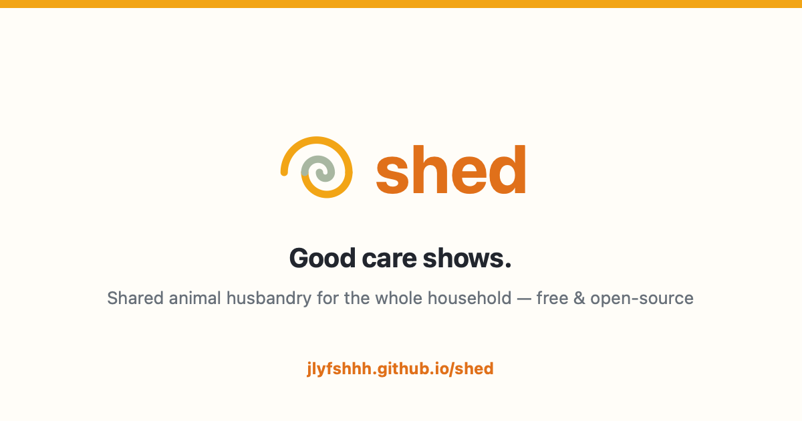

Shed turns schedules, completed care, weights, and animal notes into one calm household record—so today’s care gets done and tomorrow’s questions have answers.

Shed is organized around individual animals and terrestrial habitats, with enough structure to show patterns over time.
Feeding, misting, water bowls, supplements, salads, and recurring maintenance in one current list.
Gram-based history for snakes and other animals where growth and feeder sizing matter.
Species, enclosure dimensions, equipment, lighting, targets, upgrades, and notes stay together.
Owners manage schedules, household access, exports, and the long-term structure of the data.
Family members record care from their own phones without changing routines or deleting history.
Ordinary tables, stable identifiers, ISO dates, and JSON or CSV exports keep migration possible.
The interface and core data model are working today. The production goal is a small, dependable home server that starts itself and keeps dated backups.
Working nowDashboard, animal records, task history, roles, weight trends, and exports.
PlannedSQLite, household access, automatic backups, and a simple installer for the future Pi 5.
Already publicMIT licensed source, ordinary data formats, and development happening in the open.
A simple interface on top of a structured, append-only care history.
Daily, weekly, monthly, and every-N-day routines become a clear set of tasks for the right animals.
Whether it is you or one of the kids, every phone sees the same completed state and keeper role.
Weights, feedings, husbandry changes, and health notes can be reviewed without reconstructing them from memory.
Not yet. The working prototype establishes the interface and data structure. Household authentication, editable routines, automatic backups, and the Raspberry Pi installer are the next major milestones.
No. Portability is a core requirement: stable identifiers, ordinary relational data, ISO timestamps, and open JSON and CSV exports. The Pi edition will use SQLite with dated backups.
That is the design. An Owner manages the system while Zookeepers can record routine husbandry from their own phones. The shared server prevents each device from becoming a separate copy of the truth.
Aquariums are primarily systems: water chemistry, equipment, maintenance, and livestock groups matter more than individual profiles. Clarity handles that model while shared habitat IDs link mixed setups back to Shed.
No. Shed is a planning and recordkeeping tool, not veterinary advice or a universal care guide. Species targets and schedules should always come from appropriate, trusted sources.